Intrinsic image decomposition splits a photograph into the colour of the material and the light falling on it. Almost every method assumes that light is white. Real interiors do not oblige: a warm lamp and cool daylight tint the recovered albedo, so the same wall appears to change colour when only the lighting did.
We introduce Cross-Render Albedo Invariance (CARI), a training strategy built on a single constraint — if the same surface appears in two photographs lit differently, its recovered albedo must be identical in both. Real multi-illumination photographs supply that pairing; a white-balanced synthetic anchor supplies the absolute colour that pairwise agreement alone cannot pin down. CARI acts only during training: inference stays a single image through a single forward pass.
Evaluating the claim required repairing how it is measured. The chroma-cast score used throughout this literature pools albedo chromaticity across materials before taking its variance, so a model improves its score by washing colour out of its prediction. We separate invariance from fidelity, and the correction reverses the ranking of our own ablation. Under the repaired metrics our model leads lightness stability while training 24× fewer parameters than the strongest baseline, and does not lead the colour axes.
Write a photograph as material times shading, I = A ⊙ Sd + R. If shading Sd is one channel per pixel, it can only make a surface lighter or darker. It cannot be orange. So when a tungsten lamp casts an orange light across a white wall, that hue has exactly one place left to go — into the albedo, the one layer that is supposed to describe the paint rather than the lamp.
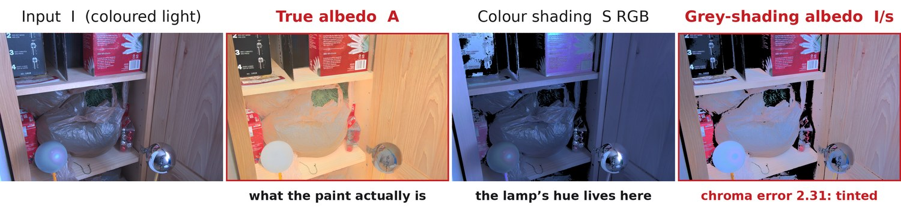
Two explanations of one image. Both reconstruct the input exactly. Only the shading model differs — and with a single-channel shading map, the lamp's hue is pushed into the material layer.
Giving the model RGB shading is necessary but not sufficient. Modern methods that already have three-channel shading still drift when the illuminant changes, and they drift in different ways: some hold still by quietly desaturating everything, others keep colour but land on the wrong one.
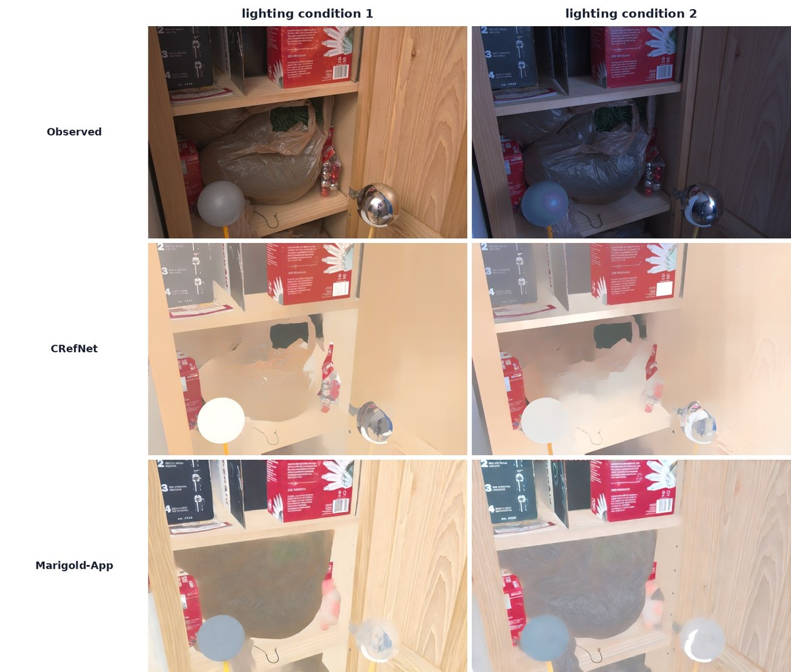
Two failure modes. The same shelf under two lamp settings. CRefNet stays comparatively stable partly by reducing colour variation; Marigold-App drifts less in hue but is imperfectly calibrated. Neither is invariant for the right reason.
From a single image, a warm surface under white light and a white surface under warm light are the same picture. No loss on one photograph can separate them, because the evidence simply is not in the frame. A second photograph of the same scene under a different lamp is: whatever changed between the two shots is lighting, and whatever did not is material.
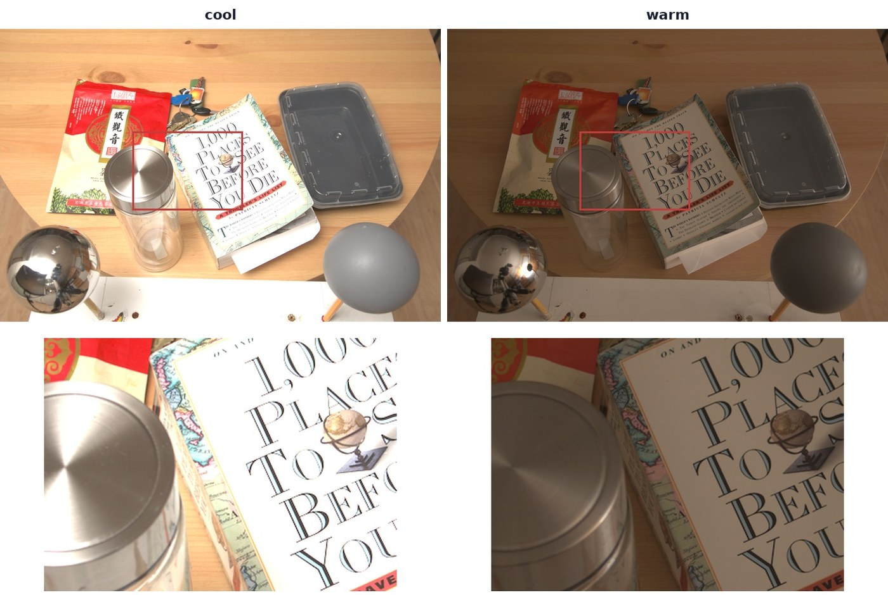
The supervision signal. Same camera, same objects, same materials — only the lamps changed. The Multi-Illumination Dataset provides thousands of such pixel-aligned pairs of real indoor scenes.
During training, two photographs of one scene under different lamps go through the same network. Three losses then say what the pair is allowed to disagree about.
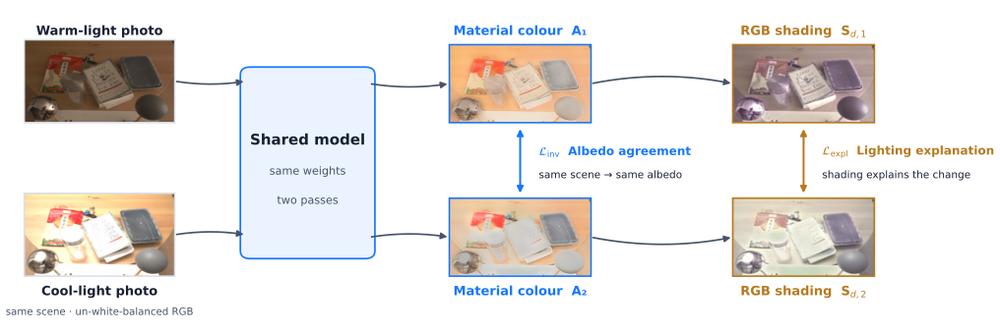
CARI applies at training time only. The pairing disappears at inference — the deployed model still takes one image and makes one forward pass.
The same pixel, photographed under two lamps, must be assigned the same material colour.
Invariance alone can be satisfied by a lazy model that ignores lighting entirely. This forces the brightness ratio between the two observations to be explained by the shading layer, which is where it belongs.
Two predictions can agree perfectly and both be wrong. Normalising to unit length pins the hue against ground truth independently of how bright the surface is.
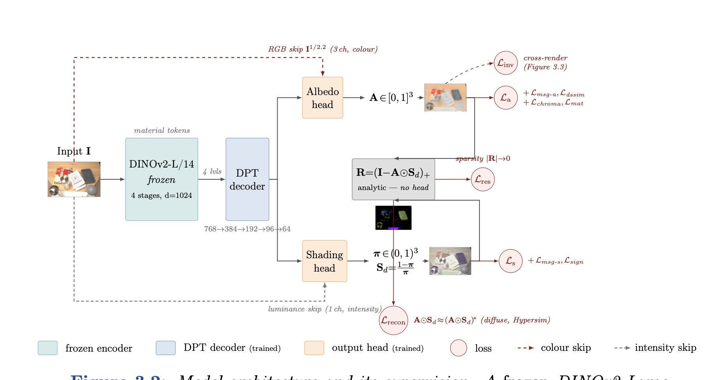
Thesis Fig. 3.3 — one image, one pass. A frozen DINOv2-L encoder supplies illumination-invariant material tokens; a DPT decoder feeds an albedo head and an RGB shading head. The non-diffuse residual is derived analytically rather than predicted. A colour-skip path carries input chroma detail past the bottleneck.
The DINOv2-L backbone (304M parameters) stays frozen throughout and is not counted as trained.
The standard chroma-cast score pools albedo chromaticity across every material in a scene and then takes the variance over illuminants. That pooled quantity mixes two different things: how much the illuminant dragged the prediction around, and how chromatically diverse the scene is — and the second term is computed from the prediction, not from ground truth.
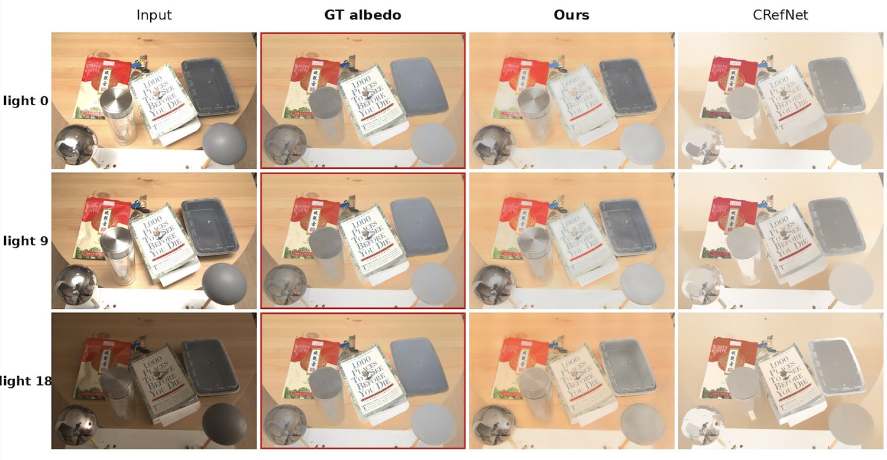
Invariance won the wrong way. One scene under three lamp settings. CRefNet's albedo barely moves across the row — but compare it with the ground truth and the reason is clear: there is far less colour left in it to move.
So we score two questions separately, and require a method to answer both.
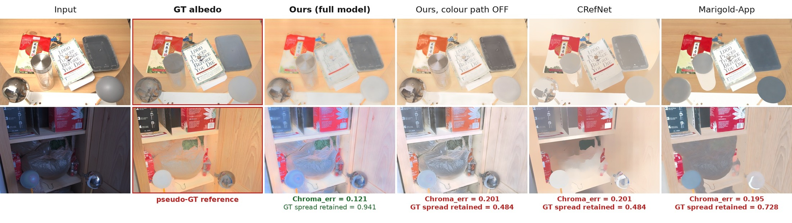
When the collapse happens, it is visible. CRefNet and the colour-path-off ablation score well on pooled invariance with visibly drained material colour. This is a real failure mode, but not the only route to invariance — CD-IID reaches the lowest drift in the table while keeping its colour.
Held-out MIDIntrinsics split, 30 scenes. All methods run through the identical evaluation
harness, on raw un-white-balanced input. Bracketed ranges are 95% percentile-bootstrap
intervals over scenes, showing scene-to-scene spread; Chroma_fid carries no
interval in the thesis table, so none is invented here. These are marginal intervals — the
method comparisons are paired (same scenes), and significance is established by a
paired bootstrap, not by whether these brackets overlap.
| Model | Cmat ↓ | Chromaerr ↓ | Castrel ↓ | Chromafid → 1 |
|---|---|---|---|---|
| Ours (full) | 0.130[.117–.144] | 0.121[.102–.143] | 0.421[.357–.485] | 0.941 |
| Ours (base CARI) | 0.157[.141–.174] | 0.129[.109–.150] | 0.425[.360–.491] | 0.999 |
| CD-IID | 0.190[.172–.210] | 0.090[.073–.110] | 0.306[.262–.355] | 0.944 |
| RGB→X | 0.128[.115–.141] | 0.203[.170–.239] | 0.338[.273–.409] | 0.907 |
| CRefNet | 0.151[.138–.164] | 0.201[.165–.241] | 0.355[.309–.406] | 0.484 |
| Marigold-App | 0.193[.173–.214] | 0.195[.152–.245] | 0.355[.309–.406] | 0.728 |
| Marigold-Light | 0.546[.462–.645] | 0.154[.124–.187] | 0.392[.333–.459] | 1.148 |
| Ordinal Shading | 0.252[.229–.279] | 0.148[.130–.166] | 0.549[.463–.637] | 0.924 |
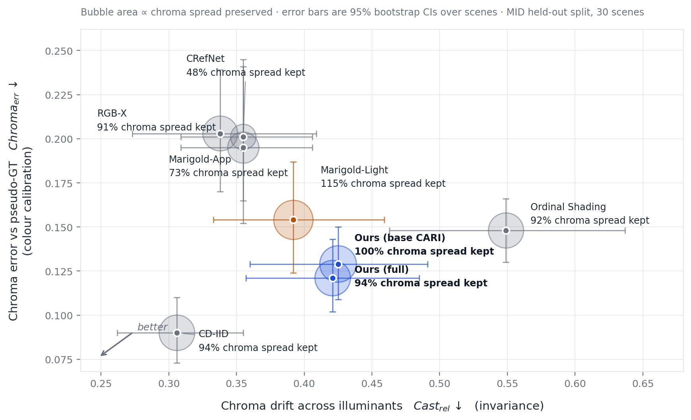
Where the trade-off actually sits. Bubble area is proportional to the fraction of the reference chroma spread that survives. Error bars are 95% percentile-bootstrap intervals over scenes — they show how much each score varies from scene to scene, which is large here. They are not a significance test: because every method is scored on the same scenes, the comparisons are paired, and a paired bootstrap resolves differences that these marginal intervals leave looking ambiguous. The significance claims below come from that paired test.
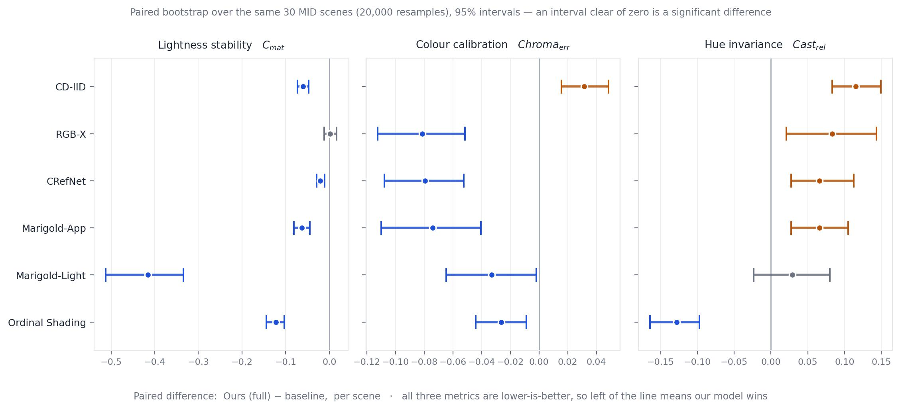
The same comparison, tested properly. Because every method is scored on the same 30 scenes, the difference can be taken scene by scene, which cancels scene difficulty and resolves what the marginal intervals above leave ambiguous. Our model beats every baseline on lightness stability and on colour calibration, with all eight intervals clear of zero. On hue invariance it loses to CRefNet and Marigold-App, is statistically inseparable from Marigold-Light, and beats Ordinal Shading. On the two colour axes CD-IID beats us significantly, which is the honest headline of this figure.
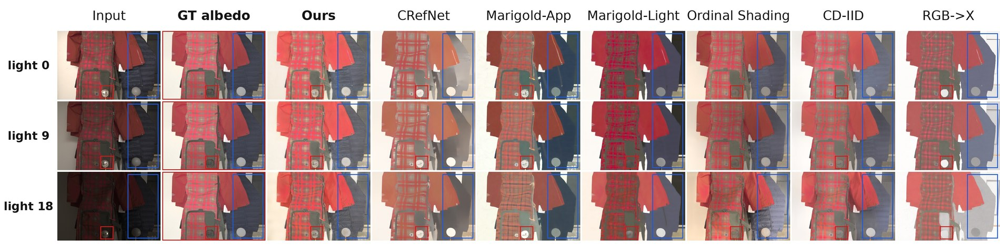
Held-out scene, three lamp settings. The methods differ in how much lamp colour leaks into the material and how much genuine colour variation they keep.
A 2×2 ablation switches the paired CARI losses and the colour-detail path on and off independently, keeping everything else matched. Only the horizontal comparisons (Row 1→2 and Row 3→4) isolate CARI.
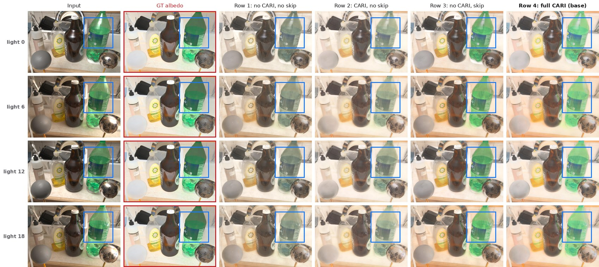
One scene, four lamp settings, four training configurations. The boxed object group is the same in every panel. Turning CARI on visibly steadies the recovered colour across rows; the colour path restores material detail.
The paired losses also improve conventional accuracy on raw input, in both matched settings: ARAP LMSE and mn-RMSE both fall by 14% from Row 1→2, and by 7–8% from Row 3→4.
Constancy is only worth having if the decomposition is still accurate. We check measured colour (MAW), dense reference albedo (ARAP) and relative reflectance judgements (IIW).
| Model | MAW ΔE00 ↓ measured colour |
ARAP mn-RMSE ↓ dense albedo |
IIW WHDR ↓ relative reflectance |
|---|---|---|---|
| Ours (full) | 3.981 | 0.2150 | 0.264 |
| Ours (base CARI) | 4.155 | 0.2259 | 0.286 |
| CRefNet | 3.970 | 0.2916 | 0.168† |
| Marigold-App | 3.775 | 0.2529 | 0.193 |
| Marigold-Light | 4.214 | 0.6187 | 0.215 |
| Ordinal Shading | 6.884 | — | 0.257 |
All rows run locally through one harness. We lead dense albedo accuracy (ARAP) and sit within 0.2 ΔE of the best measured-colour score, so constancy is not being bought with accuracy. We do not lead IIW — and †CRefNet is trained on the IIW training split, so its WHDR is not zero-shot and is not comparable to ours. WHDR also reduces albedo to a lightness ordering before scoring, making it blind to colour by construction: it cannot validate or refute the constancy claim either way. Ordinal Shading has no local ARAP row; the thesis reports its published figure separately rather than mixing protocols.
The constraint is applied during training, so the deployed model is an ordinary single-pass regressor.
| Model | Trained (M) | Total (M) | s / image |
|---|---|---|---|
| Ours (full) | 18.5 | 322.9 | 0.148 |
| CRefNet | 66.6 | 66.6 | 0.447 |
| Ordinal Shading | ~337 | ~337 | — |
| Marigold-App | ~1290 | 1290 | 0.805 |
| Marigold-Light | ~1290 | 1290 | 0.982 |
Roughly 70× fewer trained weights than the diffusion baselines and 3.6× fewer than CRefNet, at 3–6.6× the speed. To be precise about what this does and does not claim: the saving is in weights that had to be trained, because the DINOv2-L backbone stays frozen. On total parameters we are not the small model — CRefNet is 4.8× smaller. Timings are measured on one GPU at 512×512 through the same interface, with Marigold at its recommended four denoising steps.
CARI reduces coloured-light leakage. It does not resolve the decomposition ambiguity, and the failures are systematic rather than incidental.
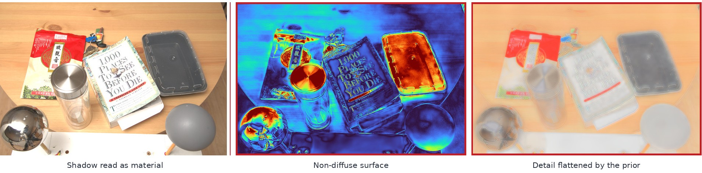
Three failure modes, each pointing at a different fix. The middle panel is a cross-illuminant variation map, warm where the recovered albedo moves most as the lamp changes: the instability lands squarely on the metal lid, the glass, and the mirror ball, and not on the diffuse surfaces around them. It is a localisation aid rather than a calibrated measurement — the colour scale is relative, so read where it is warm, not how warm.
@mastersthesis{tran2026cari, title = {Coloured Illumination Constancy in Intrinsic Image Decomposition via Cross-Render Albedo Invariance}, author = {Tran, Minh Khang}, school = {Norwegian University of Science and Technology (NTNU)}, year = {2026}, note = {Erasmus Mundus Joint Master in Computational Colour and Spectral Imaging (COSI)} }